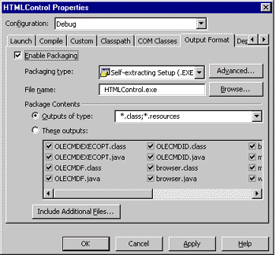
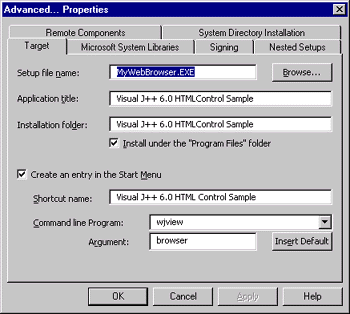
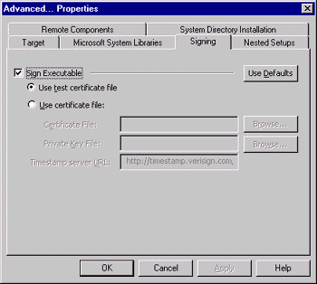
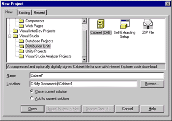
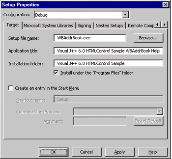
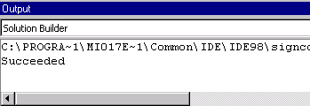

|
| ||
|
| ||
Michael Edwards
Developer Technology Engineer
November 25, 1998
Contents
Introduction
Creating a Setup Application
Specifying Project Properties
Building and Deploying
Making Sure the Target Computer Can Run WFC Applications
Detecting the Microsoft Virtual Machine for Java
Using the <OBJECT> tag
When the client isn't using Internet Explorer
Other WFC Application Requirements
WJVIEW.exe
Dependencies on system- or vendor-supplied COM components
Dependencies on your own COM Components
Building distribution units for custom components
Building a cabinet file the old-fashioned way
Summary
Microsoft® Visual Studio® 6.0 introduces a whole new set of features for automatically packaging your project outputs into "distribution units." This means a couple of things: first, you are no longer required to learn all the incantations and myriad command-line switches of the several tools required to create a code-signed download package, and second, a setup application can be automatically included. What's the catch? You will need to learn a new set of Visual Studio 6.0 dialogs to provide the necessary information for building your package and setting the installation parameters. What's the payoff? You can create the self-extracting executable file that goes directly onto your Web server in one step from within the Visual Studio development environment. Further, because you don't need to use any server-side scripting, the same Web page can be used to install your application from other distribution media (such as CD-ROM or DVD).
I will now discuss how to build a setup application based upon a Visual J++™ 6.0 custom browser project I created (and that you can download from my browser install page). Even though I used a Visual J++ 6.0 sample, you can apply this technique to create a download package and setup application from any other Visual Studio 6.0 tool, or even other application-development tools (such as Delphi by Inprise).
While Visual Studio 6.0 can produce other output formats, the most appropriate download package for installing a stand-alone Windows application from a Web page is a self-extracting executable. Therefore I am going to confine my explanation to the "Self-extracting Setup (.EXE)" package type.
Below is the Properties dialog box (accessed from the Project menu) with the "Output Format" tab selected for my MyWebBrowser project. This tab includes all the information needed to build a package and set up the application.

There are three things you need to do in this dialog. First, select the "Configuration" you will be working with, debug or retail, from the drop-down menu. This option doesn't establish whether you are building a debug or release application, but whether changes to the output format settings apply to the debug or retail version. (You can choose whether you are building a debug or release version from the Build Configuration item in the Build menu.)
Second, choose "Packaging type." The most appropriate packaging type for Windows applications, and the one I'll discuss at length in this article, is the Self-extracting Setup (.EXE). It's the only executable output format that can be digitally signed with your software publishing credentials. If your users don't require assurance, and you know your download has not been tampered with, you could choose the Zip Archive (.ZIP) option. Of course, this requires fairly advanced users who will know what to do with your archive.
Third, select the files to include in the package that will be extracted on the target computer. In this case, "package" refers to the code-signed cabinet file that will contain all the files that need to be distributed with your application. In my case, I only needed the .class and .resources files (the resources file has information about the controls and forms in WFC applications). If I'd wanted to include other files, such as sample Web pages, or maybe some image or audio files, I could have directly added them from the Package Contents area of the dialog. The "Outputs of type" edit field and "These outputs" checklist are two different ways to add files that are part of your project. The Include Additional Files button brings up a standard file dialog that enables you to select other, non-project files to include (I'll show how this is useful in a minute).
The options available in the Advanced dialog box (activated by clicking on the Advanced button next to the "Packaging type" drop-down menu) depend on the packaging type. The Advanced dialog box for the Self-extracting Setup (.EXE) package type is shown below:

The "Target" tab specifies the destinations and titles your application will assume once installed. Providing an entry in the "Application title" option enables the setup application to register your application with the Add/Remove Programs Control Panel program (so users can uninstall your application). "Installation Folder" specifies the location to extract the contents of your application package to, which can be installed under the "Program Files" folder if you check the "Install under the 'Program Files' folder" checkbox (the user can override this location at install time). You can also create a Start menu entry using the "Shortcut name" textbox. Activating the "Create an entry in the Start menu" checkbox for your application activates the "Command-line Program" options; in my case, WJVIEW.exe will execute with the argument "browser" (the main application class that extends wfc.ui.Form and implements the main() method). You can pass command line arguments to a method by including them in the "Argument" field after your startup class name.
The "Signing" tab in this dialog specifies the settings for code-signing your package with your software publisher credentials. You can choose to automatically sign your package with a test certificate included with Visual J++ 6.0. If you test-sign the package, a timestamp is not generated, although you can indicate a timestamp server (Verisign's is used by default). This feature is a HUGE time-saver. Those of you who haven't had to figure out the command-line code-signing tools will just not fully appreciate this (that's a good thing). Because I live in the United States, it only costs US$20 to get an Individual Software Publisher (Class 2) Digital ID from Verisign  . In order to prove it really works, I obtained my own Digital ID and signed all the executable downloads in this article with it. I just clicked the "Use certificate file" radio button and navigated to my certificate and private key files after clicking the Browse button.
. In order to prove it really works, I obtained my own Digital ID and signed all the executable downloads in this article with it. I just clicked the "Use certificate file" radio button and navigated to my certificate and private key files after clicking the Browse button.

The "Nested Setups" tab allows you to insert other setup applications within your own package. The embedded setup application is extracted and run at install time (before your own application). For example, self-extracting executables for the software dependencies of your application can be separately installed from a nested setup file. If you have struggled to figure out how to nest setup applications, you'll really like this feature. Note that you will have to first add the desired setup application files to your package using the Include Additional Files button on the main "Output Format" tab before they will show up in the Nested Setups listbox. Also, the additional files will not show up in the "Nested Setups" tab until you select OK in the "Output Format" dialog and reopen it.
The "System Directory Installation" tab allows you to install any of your files directly into the Windows system folder. This feature is useful if there are certain shared files in your application that you don't want removed if the user uninstalls your application. It can also be used to install the WJVIEW.exe application.
There are two other tabs in the "Advanced Properties" dialog that I did not use in my sample application but will go over briefly.
The "Microsoft System Libraries" tab includes the packages that are installed in the <Program Files>\Microsoft Visual Studio\Common\IDE\IDE98\Redist folder. For version 6.0, this includes the MSJavX86.exe self-extracting setup component which installs the Microsoft Virtual Machine for Java, the WFC classes, and the md_ac.exe self-extracting setup component (which installs the data access components for wfc.data.* classes). If you include these system components in your package, they will be automatically installed on the target computer before your own application. If one or both of these system components are already up-to-date on the target computer, they will not be installed. Including these redistributable components in your package is by far the easiest and most trouble-free approach to ensuring the target computer can run your application. The only issue that might make you think twice is any requirement to keep your package as small as possible for Internet download (or to conserve intranet bandwidth). After all, you don't want to force users to download many extra megabytes to get your application if they don't need to. However, as I explain below in Making Sure the Target Computer Can Run WFC Applications, not including these redistributable components in your package can mean a lot of extra work to make sure the target computer can run your application.
The "Remote Components" tab is disabled on my computer because I havn't registered any remote DCOM computers. If your project uses remote DCOM, you'll have to add the DCOM server files to your project (see "For More Information" below).
Once you have made all your selections in the "Output Format" tab, simply build your project to create the self-extracting executable file. This file just needs to be run on the target computer to install your application. To help you with that, Visual Studio 6.0 includes new features for deploying your project outputs on your development computer, directly to a Web server on your intranet, or even to the Internet. So just build your projects, and all the necessary outputs are automatically copied to all the right places. This can be real convenient, especially if your solution includes multiple projects. However, I did not play with the deployment features very much, so I'm not going to go over deployment any further in this article. Once the package is deployed on a Web server, you just need to create the page that will host the download using a simple anchor tag:
<A href="setupapp.exe">download and run</A> the self-extracting setup application.
In fact, this is the method I used in my custom browser application install page.
The self-extracting setup code installs each of the Java .class files for your Visual J++ applications by entering them into the "Shared DLL" registry key as separate entries. Unfortunately this registry key has a hard 64-KByte upper limit. So users with lots of J++ applications might run into problems when the setup application fails due to this limit. If you are installing a large application with dozens or even hundreds of .class files, you will be more likely to run into this problem. If so, you'll have to investigate alternatives, such as zipping up all your class files and placing them on the classpath.
If you're like me, you sometimes forge ahead before taking the time to really look through all the docs. This can cost you time when the docs are good. In my own case, I took the time to skim through the Visual J++ 6.0 documentation, but neglected to look at the Visual Studio 6.0 docs. That was a mistake, because the new packaging and deployment features are part of Visual Studio 6.0 (meaning they apply to the whole Visual Studio family). Read all about the new packaging and deployment features in the documentation at:
Packaged products sold through "normal" distribution channels are always labeled to indicate application requirements such as operating system, minimum memory, disk space, and so on. If you distribute your application on the Web, your installation page should include the same type of information. However, there are many obscure application requirements that you can't expect end users to know, especially things like the version and vendor for various system dependencies. The problem is that some end users will have up-to-date system components, while others won't. And of course, most end users won't know the difference. In this case, descriptive labeling is insufficient and inappropriate -- you have to take specific steps on behalf of your customer to ensure required system components are installed and up to date.
As I mentioned above, by far the safest and easiest approach to ensure the target computer will run your application is to embed the setup applications for all your dependent components in your single, self-extracting executable. All the end-user has to do is click one download link and all your dependencies, as well as your application, are installed. The problem with this easy solution is size. For example, WFC applications depend upon a recent version of the Microsoft VM for Java, and the MSJavX86.exe redistributable is over 6 MB! If your situation is such that you don't have to worry too much about size, then great, but since this is an article about installing from Web pages, I will go the extra mile and talk about the issues you'll need to deal with if you choose to not include your dependent components in your application package.
I am going to focus on the types of dependencies common in WFC applications, but the same idea applies to any application. It comes down to carefully thinking about what dependencies your application has, how you determine whether the target is up-do-date, and how you bring it up to date.
WFC applications require the Microsoft® Virtual Machine for Java (version 5.00.2925 or greater) and the Microsoft Windows® Foundation Classes (WFC) for Java. When you install a WFC application, therefore, it is important to make sure the client computer has compatible VM and WFC libraries. There are two ways you can accomplish this "invisibly" (without asking the user to do any investigating), both of which, unfortunately, end up downloading the free redistributable self-extracting executable file MSJAVX86.exe that installs the Microsoft VM for Java.
Embedding an <OBJECT> tag on your Web page is the easiest and safest method to install the Microsoft VM for Java :
<OBJECT CLASSID="clsid:08B0E5C0-4FCB-11CF-AAA5-00401C608500" WIDTH=0 HEIGHT=0 CODEBASE="http://www.microsoft.com/isapi/redir.dll?prd=JAVAVM&a mp;pver=5.00.2910&ar=MSVISUALJ#Version=5,0,2925"> </OBJECT>
When Internet Explorer encounters this tag, it will automatically check to see if the indicated CLASSID (which refers to the Java VM component MSJAVA.dll) is at least version 5.0.2925 (as indicated by the "#Version=5,0,2925" piece of the CODEBASE attribute). If not, the browser will automatically download and install the URL in the CODEBASE attribute (which resolves to the installer for the latest VM). The user must approve the download certificate for the Microsoft Virtual Machine for Java (which includes the necessary WFC classes) before the installer will run. If you prefer to download the VM installer from your own server, just modify the URL to point to the self-extracting executable file MSJAVX86.exe wherever it resides. Make sure you include the correct version information "#Version=" string on the end of your URL so the browser can avoid initiating the download if the client's VM is already up to date. It's also a good idea to study the VM redistribution information in the "For More Information" section below.
Because the <OBJECT> tag technique automatically starts the download operation if the customer's VM needs to be updated, this solution has the same result as embedding the MSJavX86.exe self-extracting setup directly in your application (with the benefit of not having to embed it in your application package). However, since the download operation begins immediately, it is not a good idea to put this tag on the same page the customer sees when they are deciding whether they want to download your application. Instead, they should be taken to a different page that contains the <OBJECT> tag and a link to download and run your application's self-extracting executable.
The problem with using the <OBJECT> tag method to update the customer's VM is that Netscape browsers don't support the <OBJECT> tag natively. Instead, you could resort to an HTML-only method that requires the user to explicitly request the download:
<P> This page requires the Microsoft® Virtual Machine for Java, Version 5.00.2925 or greater, and the Microsoft Windows® Foundation Classes (WFC) for Java. <A href="http://www.microsoft.com/isapi/redir.dll?prd=javavm&p ver=5.00.2910&ar=MSVISUALJ"> Update the required components</A>. </P>
Unfortunately, this technique won't detect the VM version before starting the download, so it won't tell the user whether they need the update. Also, although MSJavX86.exe will abort if the end-user's VM is already up to date, they still have to download it first. What would be more useful is the ability to first detect whether the end-user needs to update their VM.
If you read my recent sniffing article, you might conclude that all you need to detect the client's VM is a simple Java applet that applies the com.ms.util.SystemVersionManager or java.lang.System methods. However, neither works for Netscape browsers, because they only tell you what VM Netscape is using.
So, if the end-user is browsing your install page via a Netscape browser, you need to check the version stamp on the file msjava.dll located in the folder WINDOWS\SYSTEM32 (on Windows NT) or WINDOWS\SYSTEM (on Windows 98). Checking file version stamps on the Windows platform is accomplished using the Win32 FileVersion API, or the new DLLGetVersion API, so a pure scripting solution won't work. Instead, you will need to use either a Netscape plug-in or a Java applet. And either solution requires code-signing your component, because file system access is a protected operation for Web pages. If you still want to go this route, the MSJ article C++ Q&A with Paul DiLascia  has example code for checking version stamps.
has example code for checking version stamps.
Given the above issues, the easiest solution is to have two self-extracting executables for your application. The version you use for Netscape browsers should embed the MSJavX86.exe redistributable, while for Internet Explorer browsers you can use the <OBJECT> tag method described above. That way you won't penalize Internet Explorer users who already have up-to-date components, but you can still be assured that customers using Netscape browsers will get the VM they need to run your application. (Note: This method won't screw up Netscape clients, because it won't replace or remove anything required by Netscape's VM.)
You may wish to consider telling the user how they can determine what version, if any, of the Microsoft VM for Java is installed on their machine (and thus whether they need the big or not-so-big download). The easiest way for the user to determine this information by entering "msjava.dll" in the Find Files dialog box (from the Start menu):

Figure 4: Using the Find Files dialog box to locate MSJAVA.dll
Right-click on the MSJAVA.dll file (the component that implements the Microsoft VM for Java) in this dialog and select "Properties" to bring up a Property sheet where the "Version" tab indicates the VM version.
I demonstrate this technique in my custom browser application install page.
Documentation regarding redistributable Java components 
Documentation on com.ms.util.SystemVersionManager 
A Knowledge Base article entitle INFO: Availability of Current Build of Microsoft VM for Java 
Another Knowledge Base article entitled INFO: Historical List of Shipping Vehicles for Java VM 
Your support options for the redistributable Microsoft Virtual Machine for Java:
http://www.microsoft.com/java/sdk/32/relnotes_sdk/support.htm 
http://msdn.microsoft.com/visualj/technical/support.asp 
Some WFC applications depend upon certain COM components and ActiveX® controls for aspects of their functionality. Sometimes these objects are already installed on the target computer, but, again, you can't depend upon that being the case. All WFC applications depend upon WJVIEW.exe being available.
Any WFC application distributed as a "Self-extracting Executable (.EXE)" requires the WJView.exe component. WJView is added to the Start menu by the installer (with your main WFC class entered as a command-line parameter). You can't depend upon WJVIEW.exe being installed on the client computer, so you will need to install it yourself using the "Include Additional Files" feature I discussed earlier. (When you install Visual J++ 6.0, the WJVIEW.exe application is copied to your Windows folder.)
After adding WJVIEW.exe to your package, you need to tell the installer to copy it to the Windows folder when your application files are installed using the "System Directories" tab).
Even if your application depends upon COM components included with Windows, you still need to make sure they are installed. For example, my custom browser sample application requires the WebBrowser control and some Internet Explorer 4.01 Shell components, so the install page checks whether the proper browser software is installed on the target computer (and offers links to download them if needed).
Of course, you need to take into account the range of download speeds available on the expected targets, and in general for the Web it makes sense to make your download as small as possible. So, while you will want to check whether necessary system dependencies are present on the target computer, consider offering separate downloads for each necessary component.
If your WFC application uses COM components that you created yourself, it's a safe bet they aren't installed on the target computer. Therefore, install them as part of your normal application setup. Of course that means you need to create the download packages for these components as well. There are a couple ways you can do this.
One way to create the download package for a custom COM component is by using a Visual Studio 6.0 Distribution Unit project:

The Visual Studio 6.0 Distribution Unit method allows you to create a Cabinet file, self-extracting executable, or zip archive (the same choices I outlined above for packaging your WFC application) for an already-built component. Thus, distribution unit projects are great for packaging existing COM components for which you have the COM server (the .DLL or .EXE file). Because the WBAddrBook component for my sample browser application was built with Visual C++ 6.0 (which does not directly integrate the Visual Studio 6.0 packaging feature), a distribution unit project was my only packaging option.
If you create a self-extracting executable package for your custom COM component, you can install it on the target computer by adding it as a nested setup in your main application package. You will need to adjust the properties for the distribution unit project just as you did with your main application package. Select "YourProjectName Properties" from the Project menu, and the following dialog box will appear:

Note how this dialog is identical to the "Output Format" tab discussed earlier. They work identically, although obviously you won't need to create an entry in the Start menu to set up a dependent COM component. The "Application title" setting is the text string that will appear in the Add/Remove Software Control Panel -- uninstalling will delete the component and remove it from the Windows registry. Also, you can install the component in the Windows/System folder (via the "System Directory Installation" tab), or just leave it in the folder indicated in the "Installation folder" text field (the setup software will register the component no matter where it ends up being installed).
It would be nice if you could install your component as a nested setup in your main application package by using a distribution unit project to create a Cabinet (.cab) file. But you can't yet. So, in the absence of a nested setup, how do you install a .cab file on the target? By using any of the HTML tags that are designed to accept .cab file archives (such as <OBJECT> or <APPLET>).
From a download size point of view, cabinet files are the best way to install dependent components (that are not themselves applications) because they don't need to include any setup or uninstall code. The problem with both the self-extracting executable and cabinet distribution units (as created by Visual Studio 6.0) is that they can be kind of big -- 200 KB for the setup code plus the size of your component. And there isn't an option to eliminate the setup code.
Fortunately, you have other options. In the case of my sample browser application, the WBAddrBook component is only 14 KB when compressed into a Cabinet by invoking the packaging and code-signing tools directly from the command line.
I know. I spent all this time telling you how the new packaging stuff in Visual Studio 6.0 means you don't have to learn the command-line tools, and now I tell you that if you want small downloads you have to roll your own. But wait. I have a trick for you (sometimes it pays to be lazy). If you go ahead and create a "Cabinet" distribution unit project, including filling in the "Signing" tab on the Properties dialog box (to generate a certificate with your software publishing digital credentials), you can steal the command lines that Visual Studio 6.0 uses to build and sign your cabinet, and run them yourself from a command-line prompt.
Before you build your project in VJ++, enable the "Output" view (Ctrl-Alt-O). After the project successfully builds, copy the signcode.exe line from the Output view window and paste it into a "Command Prompt" window:

Although it is truncated in the above graphic, the last parameter of the (really long) packsign.exe command line is the name of the .cab file to sign. In the case of the WBAddrbook.dll component, I created WBAddrbook.cab with this command (cabarc.exe, by the way, is placed in the SDK-Java.31\bin\PackSign folder when you install the Microsoft SDK for Java  ):
):
cabarc -s 6144 N WBAddrbook.cab WBAddrbook.dll
Once you have the signed cabinet file, users can download it from an <OBJECT> tag (of course, you'll need to use your own classid value and cabinet file name and version):
<OBJECT classid=clsid:0340F05F-E75D-11D1-AFDB-000086189887 codeBase=WBAddrBook.cab#Version=1,0,0,0 height=0 width=0>
</OBJECT>
There are some other trade-offs to installing a custom COM component using an <OBJECT> tag (nothing really comes for free in this business):
In this article I showed you how to use new features in Visual Studio 6.0 to create the download packages you'll need to deploy a Windows application from a Web page. By copying the Web folder containing your installation Web pages to a CD-ROM disc, the same methods can be leveraged for CD-ROM distribution. I also went over how Web pages need to determine whether the target computer is capable of running your application by checking for the existence of various software dependencies. In order to prove this stuff all works, I provided a sample install page that applies all these lessons in order to download a pretty nifty Visual J++ 6.0 sample application. The sample install page also has links to download all the examples.
I had a lot of fun learning how to use the new Visual Studio 6.0 features, and was very impressed with their depth, although I admit I was disappointed that I couldn't build minimally sized .Cab files or nest .Cab files in a self-extracting executable package (both of these are important from the perspective of Web deployment). But I'm expecting a lot for a first release.
At Microsoft we are actively preparing for a world where software is routinely sold and distributed over the Web. We recognize that making it easier for developers to transition to this new world is only part of the story; we also have to make sure the end-user experience is a good one. That is why I spent a lot of effort to not only show you how to use our tools to create your download packages, but also to make sure you understand what is necessary to make Web download satisfactory for your downloaders.
Did you find this material useful? Gripes? Compliments? Suggestions for other articles? Write us!
© 1999 Microsoft Corporation. All rights reserved. Terms of use.